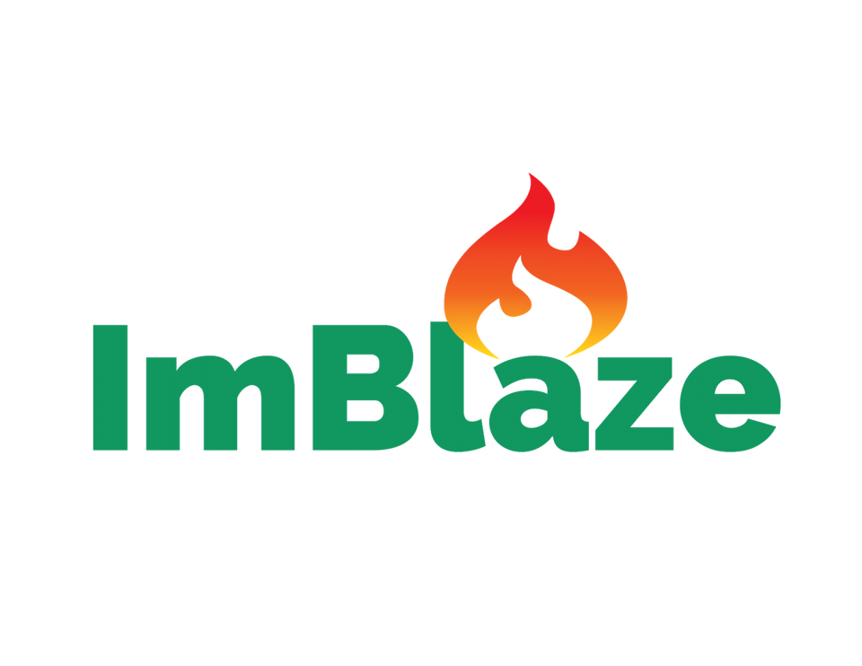
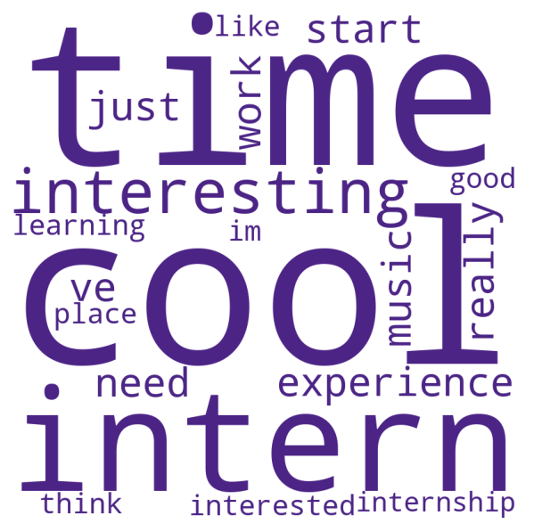
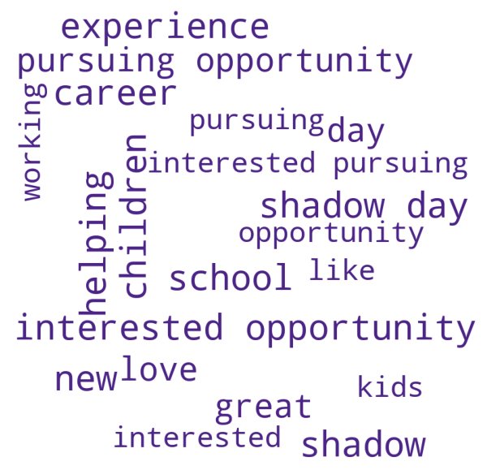

Data-driven insights to help taylor program opportunities.

Introduction
- To help the ImBlaze team maintain and adapt the platform to student needs.
- More broadly, to get a glimpse of student experience sand interest towards future steps at the high school level.
About the Polling and Open Data Initative:
The Polling and Open Data Initative at UW (PODUW) is a student organization that creates, analyzes, and presents data to catalyze social impact and support its communities, while helping students gain real-world experience.
Disclaimer Caveats:
The Program's Landscape
An overview of current and previous trends in internship availabilities and demands, fields and industries, demographics, and more.
Student Activity
The previous chart visualizes student log counts per month. Annual trends in student activity seem to peak during the second half of the year, potentially relevant to summertime and school vacations. The COVID-19 pandemic is also notably represented by the drop off during the early months of 2020. The number of logs drops from approximately 17,500 in February 2020 to around 250 logs in March 2020 which precisely aligns with the start of the pandemic in the United States. However, while health protocols and measures from the pandemic were still enforced during the following year (2021), activity seemed to have risen back surpassing 2019 numbers.
Internship Request and Demand
Student internship requests peaked in 2019 then fell during the pandemic. Internship requests from students grew more than three-fold from 2017 to 2019 but fell in 2020 as the COVID-19 pandemic took hold. Requests in the first half of 2021 are returning to pre-pandemic levels, suggesting that the effect is transitory.
Fewer students are requesting internships for each opening.
The request density (the average number of internship requests for each internship opening) fell from 2.3 in 2017 to 1.6 in 2020.
The Student Experience
An overview of current and previous trends in internship availability and demand, fields and industries, demographics, and more.
Which Factors Motivate Internship Applicants in ImBlaze?
This subsection explores student application comments inside the ImBlaze app to better understand the motivations of students seeking internships. This analysis points to three key topics of interest and popular fields, which can help ImBlaze better identify opportunities and design experiences tailored to its users’ interests.
Topic Clustering, a Natural Language Processing (NLP) technique, was used to distinguish student applications and identify topic groups. The Latent Dirichlet allocation (LDA) model, more specifically, identified the following topics based on keyword relevance. Larger keywords are identified as being more commonly associated with the topic.
Interest in specific disciplines/fields of work: One of the most common keywords students used was passion, which was closely associated with field and discipline-specific keywords, like medical, cars, or design. Interest in the medical, automotive, and art/design industries were particularly common.
Career Preparation: On the other hand, other applicants were more interested in gaining general work and internship experience, rather than exploring a passion in a specific field. These responses focused on areas like interview(s) and career(s).
Finding interesting experiences: The third cluster of responses is interpreted to be more experience-driven and exploratory. These responses shared motivations towards cool or interesting experiences, with a focus on interesting learning experiences.
Other key topics: The model also identified a fourth cluster. Lacking strong definitive keywords, it identifies other common themes less related to the previous three topics. Notable motivations include helping children and shadow(ing) opportunities
